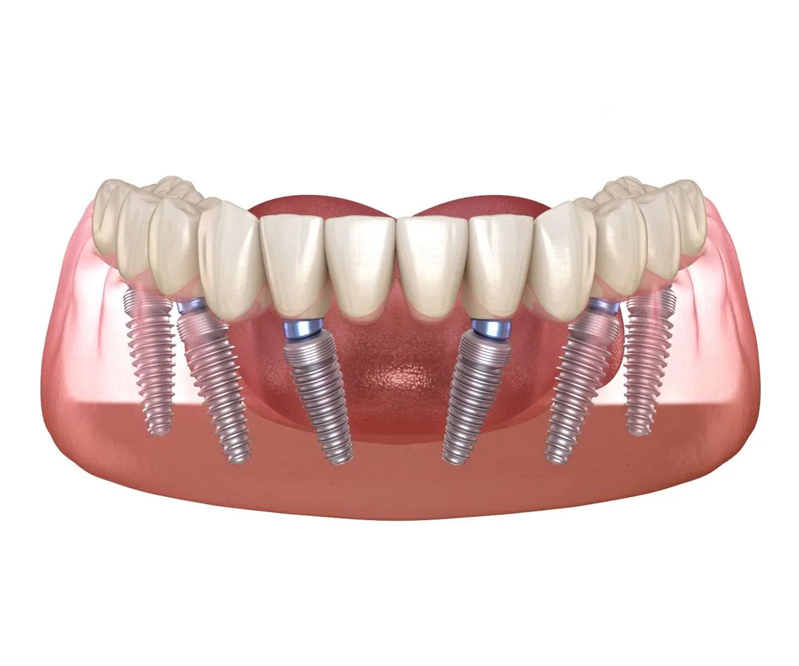
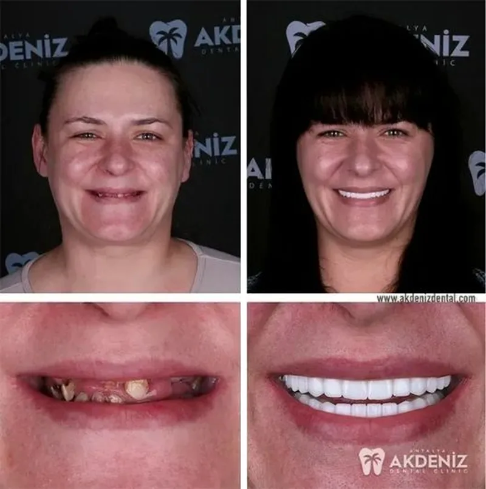
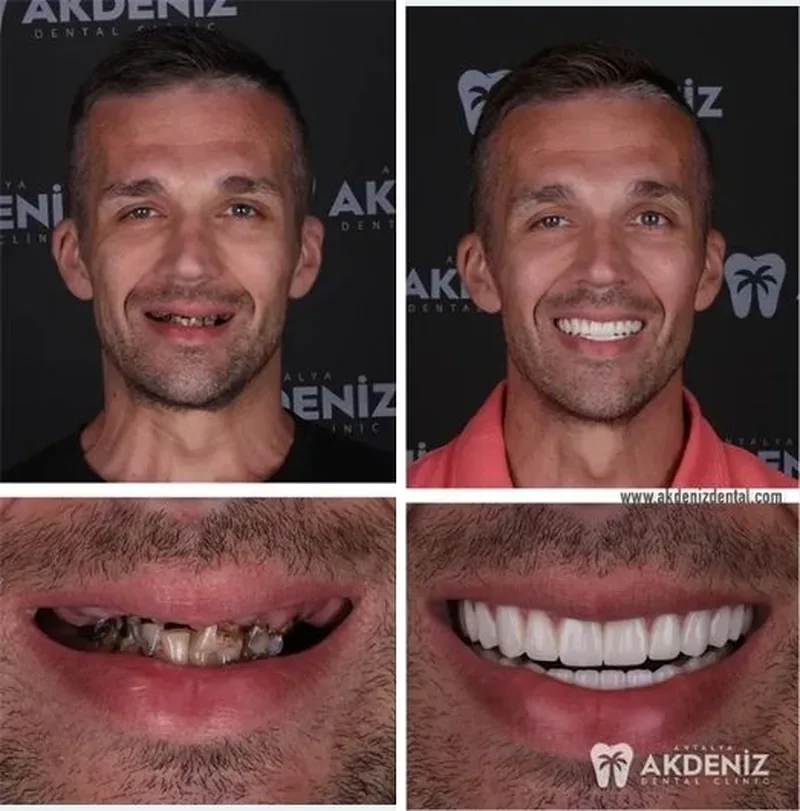

All-on-6 Dental Implants: Optimizing Your Full Arch Restoration
The All-on-6 dental implant procedure expands the concept of full-arch restoration. Utilizing six implants to secure a full-arch prosthesis, it ensures an even more robust and stable foundation for prosthetic teeth.
At its core, a dental implant is a titanium post that is surgically placed into the jawbone to serve as an artificial tooth root. The implant bonds with the natural bone, forming a strong foundation for supporting the crown or artificial tooth.
What Are All-on-6 Dental Implants?
All on 6 dental implants procedure is a new solution for those patients who must have a full set of teeth. Not to replace them one by one, but with six implants to sustain the whole arch of teeth, this treatment uses titanium implants anchored into the jawbone. We then attach a customised dental bridge to the implants to give you a completely natural-looking smile.
This technique is ideal for patients whose many teeth have either fallen out or require replacement due to decay or damage. It is a strong and tough alternative for removable dentures that allow eating, speaking, and smiling with confidence. The All on six method helps to maintain jawbone health and facial structure; it is therefore the most efficient technique for smiling back.
All on 6 dental implants before and after photos Turkey
Case Analysis 1:

Challenge: Generalized structural decay, multiple missing teeth, and severe vertical bone volume collapse causing an aged profile.
Solution: Complete full-mouth restoration with strategic implant placement, a meticulously engineered occlusal bite, and anatomical lip support.
Result: Immediate and dramatic facial rejuvenation, restored profile symmetry, and a radiant, youthful, full smile.
Our primary focus with this patient was comprehensive full-mouth reconstruction, addressing severe structural decay and tooth loss.
Key Detail: Beyond aesthetics, every restored tooth was custom-engineered for correct vertical dimension and bite alignment, restoring a youthful facial structure and correct profile.
Result: This complete smile makeover not only restored optimal function and health but also achieved a dramatic facial rejuvenation, giving the patient a symmetric and radiant smile that transformed her appearance.
Case Analysis 2:

Challenge: Extreme tooth loss, generalized structural decay, and a severe collapse of the vertical dimension resulting in a sunken facial profile.
Solution: Comprehensive mouth reconstruction using meticulously engineered crowns to restore proper occlusion, bite alignment, and essential vertical height.
Result: An immediate rejuvenation of the facial structure, optimal anatomical lip support, and a symmetrical, high-confidence smile.
This patient presented with extensive structural decay, widespread tooth loss and a reduced vertical dimension. This condition had resulted in an 'aged' and 'sunken' appearance of the facial profile.
The treatment plan involved tooth extractions, periodontal treatment and the reconstruction of the vertical dimension. This was achieved by adjusting the vertical height and angle of each restoration to the nearest millimetre.
Key Detail: Not only the colour of the teeth, but also their anatomical forms, inclinations and, most importantly, their vertical dimensions were meticulously calculated to restore lip support and facial height. This improved the patient's bite and the tone of their facial muscles.
Result: The restorations did not merely replace the teeth; they also re-established the overall harmony of the face. The 'aged' appearance gave way to a balanced, symmetrical and vibrant profile.
How long do all on 6 implants last?
All on 6 dental implants are quite long-lasting and are meant to last for years. Most of the time, these implants will last years, and some of them go up to 20 and beyond with proper care and oral health. Titanium implants integrate well with the jawbone to provide strong support and stability.
However, the length of time the dental bridge remains fixed to the implants varies. Most often, damage, poor hygiene, smoking, or grinding habits necessitate the replacement or refurbishment of the bridge every 10 to 15 years.
Proper oral hygiene, regular visits to your dentist to check and clean, and any other special care that your dental professional may recommend will add to the increased longevity of your all on 6 implants. With proper care, you are sure to have a good, healthy smile for many years.
How Much Do All-on-6 Dental Implants Cost in Turkey?
Prices for All on 6 dental implants in Antalya start from £2,500. The cost varies depending on the implant brand, the bridge material and whether bone grafting is needed.
Turkey is known to have good dental care services at a much cheaper rate compared to many other countries. Furthermore, clinics in Turkey offer package deals that cover accommodation and transport, making it very convenient for international all on 6 dental implant abroad patients.
| Country | All-on-6 price per jaw |
|---|---|
| Turkey (Akdeniz Dental Clinic, Antalya) | From £2,500 |
| United Kingdom | £10,000 - £20,000 |
Why is all on six so cheap in Turkey?
For a couple of reasons, all on 6 implants are affordable in Turkey. Firstly, Turkey has a generally lower cost of living and operational costs compared to most Western countries. This makes it possible for clinics to provide good and quality services at relatively low all on six implants prices. Again, Turkey is a competitive market in health care, with many well-qualified dentists and modern clinics offering good services at lowered all on 6 dental implants Turkey prices.
Furthermore, the Turkish government actively encourages medical tourism by awarding bonuses and facilitating special procedures for foreign patients. This increases patient flow to clinics, reducing their all on 6 dental implant costs even more. Additionally, the favourable exchange rates of foreign currencies will make treatment more cost-effective for any visitor.
Despite the lower price, most Turkish dental clinics provide patients with the latest technology and corresponding materials for the best treatment. Opting for all on 6 implants Turkey can result in significant cost savings without sacrificing quality.
How do you clean all on 6 dental implants?
For oral health, simple all on 6 dental implants cleaning is essential. Two times a day, brush with a soft toothbrush and non-abrasive toothpaste. Between implants and beneath the bridge, use a water flosser or interdental brushes. Remove plaque and germs using antimicrobial mouthwash. Dentist visits and cleanings are also essential. Your dentist may suggest cleaning instruments and methods based on your preferences. Maintenance keeps your implants clean and healthy.
What is the difference between all on 6 and all on 4?
The number of implants needed to support a complete arch of teeth distinguishes all on 6 from all on 4 dental implants. All on 6 employs six implants for stability and support, which may help weaker bones. Four implants make all on 4 less intrusive and faster to recover from. Both options provide a permanent, natural-looking treatment for missing teeth, but all on 6 is stronger, particularly for people with more complex dental requirements. For the best solution, see our skilled dentist.
Which is better all on 4 vs all on 6 dental implants?
Individual requirements determine whether to use all on 4 or all on 6 dental implants. All on 4 implants are ideal for many individuals since they are less intrusive, involve fewer implants, and heal faster. All on 6 implants provide more stability and support, particularly for patients with weaker bones or greater dental demands. Both choices provide a fixed, genuine grin, although all on 6 may be stronger.
What are the disadvantages of all on 6 implants?
Despite their benefits, all on 6 dental implants have drawn disadvantages. Due to additional implants and superior technology, the initial all on 6 dental implants cost Turkey may be greater than standard dentures or all on 4 implants. Since the treatment is more intrusive, some patients may need bone grafting to support the six implants.
Surgery may result in pain, oedema, and an extended recovery period. Infections and implant failures can result from improper care.
Finally, not everyone is a good candidate for all on 6 implants, particularly those with serious health conditions or inadequate bone structure. Our dental specialist must evaluate you to see whether this choice is good for you.
All-on-6 Procedure in Antalya: Step by Step
All on 6 dental implants procedure start with a thorough consultation, followed by X-rays and 3D scans to analyse bone density and structure. Once you meet the eligibility requirements, the process can commence.
On the day of the operation, the dentist administers local anaesthesia or sedatives for comfort. The dentist will expose the jawbone with minor gum incisions. Six titanium implants strategically inserted in the bone provide stability. With temporary teeth linked to the implants, you may leave the clinic with a functioning grin.
After 3-6 months, the implants will osseointegrate with the jawbone. A soft diet and good mouth hygiene are necessary for recovery.
After osseointegration, return to the clinic to have your permanent, custom-made bridge fitted and secured to the implants. This final restoration resembles natural teeth and is strong, comfortable, and attractive.
Who is a good candidate for all on 6 dental implants?
A good candidate for all on 6 dental implants is someone who has lost most or all their teeth and wants a permanent alternative. Candidates should have enough jawbone density to sustain the implants; however, bone grafting is a possibility for bone loss. Uncontrolled diabetes and gum disease may influence implant success; therefore, good oral and overall health are crucial. Non-smokers or smokers eager to stop have a greater success rate. Our dentist will assess your needs before recommending this therapy.
What are the benefits of all on 6 dental implants?
All on 6 have several benefits. These permanent tooth replacements let you eat, talk, and smile confidently. Patients with weaker bones benefit from six implants' greater support and longevity. Implants prevent bone loss and maintain facial structure, keeping jawbones healthy and appearing young. Their natural feel and little upkeep make them better than regular dentures. Compared to other full-mouth restorations, it requires fewer visits and less time.
How long does all on 6 take?
Most all on 6 dental implant procedures take months. The implant placement operation takes 2–3 hours. After placement, implants must recover for 3–6 months to fuse with the jawbone. Temporary dentures are worn. We install the final permanent dentures after it heals. This process requires many fitting and adjustment sessions.
How many teeth do you get with all on 6 implants?
The all on 6 dental implants provide a complete arch of 12–14 teeth. The six jawbone implants hold these teeth, creating a full, natural-looking grin. The number depends on individual requirements and dental bridge design. With this remedy, you can eat, talk, and smile confidently, which restores the function of your smile and teeth. Custom teeth appear and feel like natural teeth, improving aesthetics and usefulness.
Are all on 6 implants removable?
No, patients cannot remove all on 6 implants. The design permanently links them to six titanium implants in your jawbone. This supports the entire dental arch. The permanent nature of all on 6 implants lets you eat, talk, and smile without concern for movement or slippage. To maintain performance and comfort, only a dentist may remove implants.
What to expect after all on 6 dental implants?
Within a few days, the swelling, soreness, and bleeding from all on 6 dental implants should reduce. You may administer antibiotics and pain medication to control symptoms and prevent infection. A soft diet is essential for the first few months to let the implants integrate with the jawbone. Regular dental exams are necessary to track recovery. A bespoke bridge will replace the temporary teeth when the implants integrate.
Is All-on-6 Treatment Painful?
No. To make all on 6 dental implant process painless, local anaesthesia or sedation is employed. You may feel pressure but no discomfort. For a few days after the operation, you may have pain, oedema, and bleeding. Prescribed and over-the-counter painkillers may help. Most individuals tolerate the pain and see recovery within a week. Following your dentist's post-operative recommendations can reduce discomfort and speed recovery, letting you enjoy your beautiful smile.
What is the recovery time for all on 6 dental implants?
All on 6 dental implants typically take 3–6 months to heal and integrate with the jawbone. During the first few days to a week after surgery, you may endure swelling and pain. For optimal implant recovery, visit the dentist on a regular basis. After osseointegration, your permanent bridge will provide a solid, long-lasting smile restoration.
What happens in the recovery process after all on six implants?
Recovery from all on 6 dental implants requires multiple phases. Swelling, discomfort, and small bleeding may occur for a few days, although prescription and over-the-counter painkillers may help. Healing requires soft meals and good mouth hygiene. After 3-6 months, the implants will osseointegrate with the jawbone. Patients need regular dental checkups to monitor recovery and guarantee implant integration. We will then install your permanent, custom-made bridge, restoring your smile.
What Is the Success Rate of All-on-6 Dental Implants?
The all on 6 dental implant procedure has a 95–98% success rate. Six implants, which support and stabilise the entire tooth arch, are responsible for this achievement. This high rate is due to patient all on 6 dental implant review and selection, better surgical procedures, and high-quality materials. Good oral hygiene, frequent dental checkups, and post-operative care also help ensure long-term success.
Is it safe to have dental implants in Turkey?
Yes, it is safe to have dental implants in Turkey. Quality dental treatment and high-tech facilities are famous in Turkey. Expert Turkish dentists typically have foreign credentials. Turkey offers cheaper dental implants than many Western nations, making it appealing to patients. For safety and optimal outcomes, choose a facility with good patient ratings and dental organization certification. Research and conversations will help you decide and succeed.
How many trips to Turkey for dental implants?
Typically, all on 6 dental implant in Turkey requires two trips. The first trip involves the initial consultation, dental assessments, and surgical placement of the implants, along with fitting temporary teeth. This visit usually lasts about one week. After a healing period of 3–6 months, during which the implants integrate with the jawbone, you will return for the second trip. This visit includes fitting and attaching your permanent, custom-made bridge. The second trip also lasts about one week. These two trips ensure successful completion of all on 6 dental implant procedure and a long-lasting, beautiful smile.
Is Turkey popular for all on 6?
Yes, Turkey is a popular for all on 6 dental implants because of its affordable and high-quality treatment. Turkey has several facilities with excellent equipment and internationally trained dentists. Turkish dental care is cheaper than in many Western nations, making it appealing to individuals seeking economical, high-quality care. Turkey's medical tourism reputation means many clinics provide whole packages, including lodging and transportation, making all on 6 dental implant procedures easier for overseas patients.
What should I eat after all on 6?
To recover from all on 6 dental implants, eat soft foods. Start with soups, smoothies, yoghurt, mashed potatoes, and scrambled eggs. You may gradually add cooked veggies, soft fruits, and pasta as recovery proceeds. Avoid tough, gritty, or sticky foods that might damage implants. Rinse your mouth gently after meals to maintain dental hygiene. These food instructions will help implants heal and last longer.
When can I fly after all on 6?
The swelling and pain from all on 6 dental implants usually reduce within a few days, making it safe to travel. After the operation, most patients may fly within 3-5 days. However, recuperation durations vary, so follow your dentist's advice. Travelling with prescriptions and care instructions is important. Contact your dentist before travelling if you have serious issues. A careful approach can let you heal and travel without problems.
Can I drink coffee after a dental implant?
Avoid hot drinks like coffee for 24–48 hours after all on 6 dental implants. Implant swelling and discomfort might worsen with heat. After recovery, you can gradually reintroduce coffee. Following coffee, rinse your mouth with water to avoid discoloration and preserve dental hygiene.
How to prepare for all on 6
Preparing for all on 6 dental implants requires various processes. You should undergo X-rays and 3D scans to assess your oral health and bone structure. Share your medical history and prescriptions with your dentist. If your dentist recommends sedation, steer clear of certain medications and fast before the procedure. Plan for transportation on procedure day since you may not be able to drive. Stock up on soft snacks and recuperation products. Lastly, keep your mouth clean to prepare for implants.
What should I do after all on 6 dental implant treatment?
Follow these guidelines for a successful recovery after all on 6 dental implants. First, treat pain with the prescribed medication and minimise swelling using cold packs. First weeks: soft meals, no hard or crunchy items. Keep your mouth clean with gentle brushing and non-alcoholic mouthwash. Avoid smoking and drinking, which slow recovery. For optimum healing and implant integration, attend all follow-up visits. Finally, follow your dentist's care recommendations and report any odd symptoms, like prolonged discomfort or swelling, immediately.
Is all on 6 worth it?
Yes, many people believe all on 6 dental implants are worth it. This treatment restores lost teeth permanently and functionally. The support and durability of the six implants ensure long-term usage. Better oral health, jawbone preservation, and quality of life frequently exceed the increased initial cost. Since their health has improved, patients can now eat, talk, and smile confidently.
So, what differentiates All-on-6 from All-on-4?
Primarily, the addition of two more implants in the All-on-6 procedure leads to an enhanced spread of the load, providing a stronger, more stable foundation for the prosthetic teeth.
Are there any prerequisites for opting for All-on-6?
Patients interested in All-on-6 must have a sufficient bone density to support the additional implants. If bone density is an issue, bone grafting procedures can be considered to enhance candidacy for All-on-6.
Spread the Cost of Your Treatment with Monthly Payments
Planning your treatment in Antalya? Learn how you can finance your dental treatment through Ideal4Finance with tailored monthly repayment options.